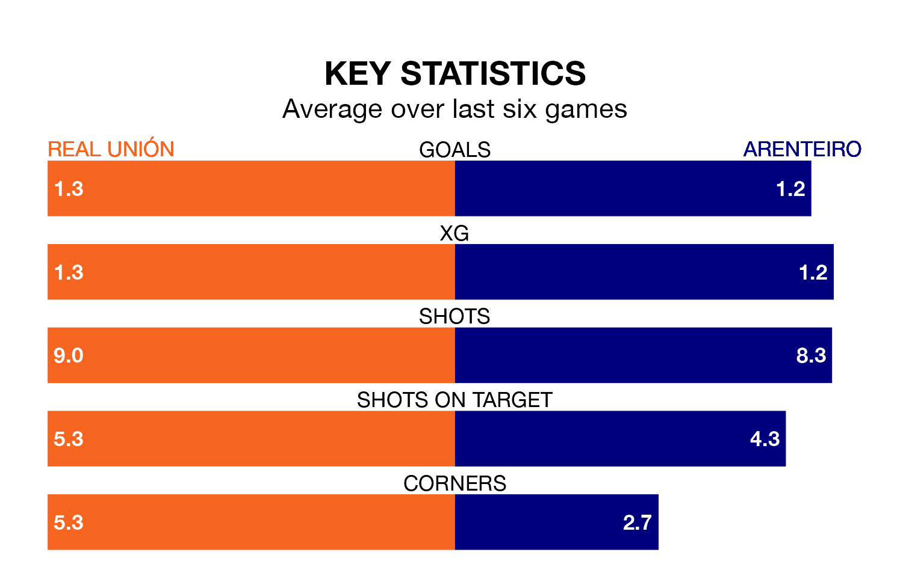

Sunday's early match between Real Unión and Arenteiro promises to be one for the neutrals, as two of Primera Division RFEF Group 1's most free-scoring sides go head-to-head.
Ahead of the game at the Estadio Gal, Unión and Arenteiro sit second and joint-fourth in the goal-scoring charts, with 28 and 25 goals respectively.
Iván Pérez Cuevas and Alejandro Cerdá Agulló lead the way for the home side, having bagged one goal each in their 19 games to date.
And Adrián Cruz Juncal, Agustín Emanuel Pastoriza Cacabelos, Alejandro Fernández Barreiros, Diego García Vázquez, Diego Rodríguez García, Francisco de Asis Rivelott Reguera, Germán Novoa Enríquez, Iván Ramos Fuentes, Javier Moreno Arrones Gil, Jordan Sánchez Valera, Jorge Manuel Romay Santiago, Juan Delgado Sirvent, Luis Gonzaga Delage Cruzado, Manuel Figueroa Cabaco, Marcos Alonso Rodríguez, Nicolás Ladislao Fedor Flores, Pablo Brea Fontans, Pol Bueso Paradís and Tiago Rodríguez López have been the main men in the opponents' penalty box for Arenteiro, with zero goals each.
Unión are in disappointing form in Primera Division RFEF Group 1, with one win and two draws from their last six games.
With three wins and three losses over that period, Arenteiro's form is better – they have taken nine points from 18, compared to the hosts' five.
The away side are eighth in the table after 19 games, of which they have won seven and drawn five, earning 26 points.
Unión are four places behind Arenteiro in 12th, with seven wins and four draws putting them on 25 points.
Over the last two years, Unión and Arenteiro have played each other twice. They won one each.
Their last meeting was on September 16, when Unión won 3-2 away.
Unión's last match was on January 14, a 0-0 draw against CF Fuenlabrada.
Arenteiro beat Barcelona B 2-0 last time out, on January 13.
Updated: 10:02 (UTC), 19/01/24